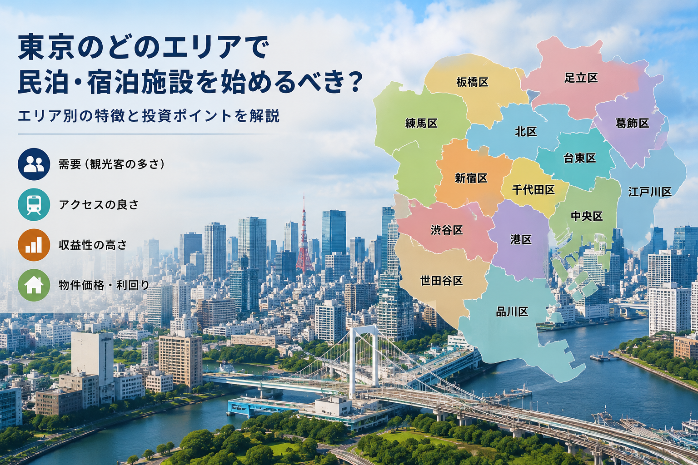

2026.06.18
宿泊東京で宿泊事業を始めるならどの区がおすすめか

宿泊事業に適した区の選び方
東京23区で宿泊事業を始めるにあたって、どの区を選ぶかは成功を大きく左右します。需要の大きさ、規制の厳しさ、物件取得コスト、運営のしやすさなど、考慮すべき要素は多岐にわたります。ここでは主要なエリアを比較しながら、それぞれの特徴を解説します。
台東区（浅草・上野）
東京を代表する観光エリアで、訪日外国人旅行者の滞在先として最も人気の高い地域の一つです。浅草寺、上野公園、美術館・博物館など観光資源が豊富で、年間を通じて安定した需要が見込めます。成田空港・羽田空港からのアクセスも良好で、物件価格は高めですが、その分客室単価も高く設定しやすいメリットがあります。
墨田区（押上・錦糸町）
東京スカイツリーを中心とした観光需要が高く、近年は外国人旅行者の滞在エリアとしても人気が急上昇しています。台東区に隣接しながら物件取得コストが比較的抑えられる点が最大の魅力です。錦糸町エリアは商業施設も充実しており、ファミリー層や長期滞在客にも対応しやすい環境が整っています。
豊島区（池袋）
池袋は中国語圏旅行者からの認知度が極めて高く、ショッピング・グルメ・エンターテインメントが集積するエリアです。JR・地下鉄・私鉄のターミナル駅であり交通の利便性は抜群です。ただし近年は条例による新規参入制限が強化されているため、事前の確認が必須です。
新宿区・渋谷区
新宿区と渋谷区は東京随一のビジネス・観光拠点であり、昼夜を問わない高い需要があります。しかし物件価格・賃料は23区内でも最高水準であり、参入障壁は高いと言わざるを得ません。また両区とも住宅宿泊事業に関する条例規制が比較的厳しく、旅館業許可の取得が現実的な選択肢となります。
まとめ：初心者におすすめの区
初期投資を抑えつつ安定した運営を目指すなら、墨田区や葛飾区がバランスの良い選択肢です。需要と価格のバランスを重視するなら台東区が最も安定しています。どの区を選ぶにしても、運営品質を高めることが収益安定の鍵となります。